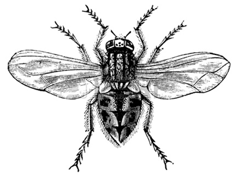
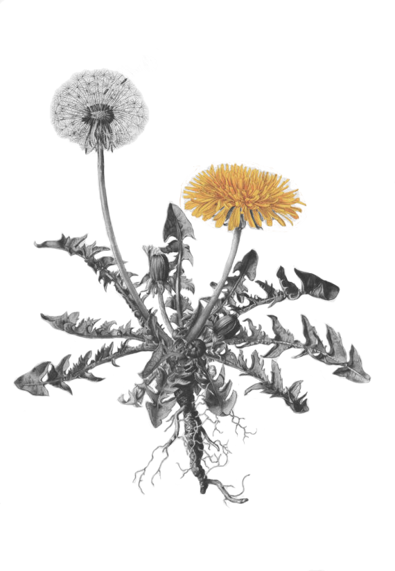
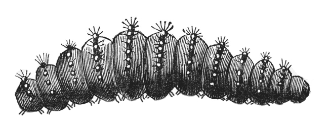
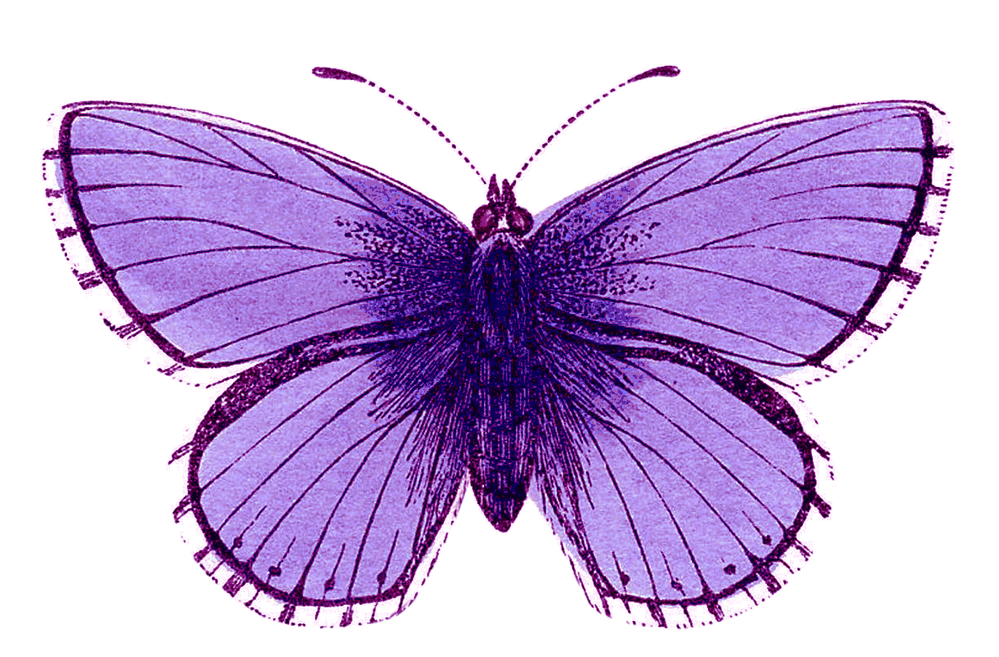

Dandelion
- Löwenzahn


1
2
3
4
5
Dandelion - from French dent-de-lion, meaning "lion's tooth"
Dandelions are thought to have evolved about 30 million years ago in Eurasia
Dandelions have been used by humans for food and as an herb for much of recorded history
In fine weather the ball extends to the full, but when rain approaches, it shuts like an umbrella
It is said that if you make a wish immediately before blowing on dandelion, your wish will come true

